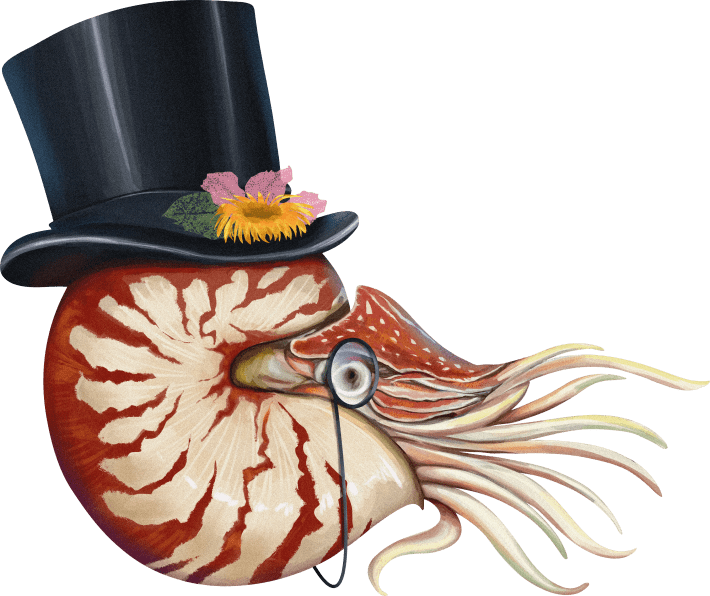

Nautilus VIP Member Program
Become a card-carrying super-supporter of scientific discovery.
Like the submarine in 20,000 Leagues Under the Sea, which shares our name, we’ve embarked on a voyage to explore the marvels of the world, viewed through the portholes of science. Our VIP members help our vessel chart its course.
What you'll get
Exclusive to VIP:
- Inclusion of your name in VIP Members' Circle pages
- Complimentary tickets to Nautilus events
- VIP welcome box
- Priority customer service
Included with Print + Digital Membership:
- Unlimited Nautilus articles online every month
- 6 print issues per year
- Ad-free reading experience
- Read on any device
- Weekly newsletters in your inbox
- Bonus access to Nautilus channels
- Discounted pricing in the Nautilus store
- Tree planted to offset print subscription
- Free shipping on print magazines (U.S.)
- Commenting access
- Much, much more!
What You'll Support
**Literary Freedom****
*Rigorous Reporting*
Science storytelling demands a scrupulousness that takes hours in the field, in the lab, and in conversations with subject matter experts. No corners are cut. That effort is what gives Nautilus its reputation for unwaveringly trustworthy science storytelling.
**Award-Winning Editorial Illustration****
Science should be beautiful. The art in Nautilus is a visual extension of the writing, and our VIP Members enable us to bring our stories to life through vibrant illustrations from celebrated artists.
Public Good
Scientific literacy has never been more important. A non-profit extension of Nautilus, NautilusThink promotes science, education, and the literary arts to expand public knowledge and understanding of fundamental questions of scientific inquiry and their connection to human culture. Through the creation of print, electronic, and visual media of the highest quality and depth, including Nautilus magazine, NautilusThink seeks to connect science to our everyday lives and explore the frontiers of scientific, mathematical, and philosophical inquiry and the human spirit.
How You'll Feel
Energized because you’ll be supporting scientific discovery, the arts, and literary freedom for yourself and others. Plugged-in because you’ll get free VIP access to exclusive Nautilus events, attended by leading scientific minds, academics, policy makers, and the Nautilus crew itself. Empowered because you’ll have a direct line to Nautilus via our concierge service, and your name prominently displayed on our VIP Members’ Circle pages (in print and digital) alongside other leading minds within our community.
Joining our VIP Members’ Circle is like stepping into a modern-day enlightenment salon, full of others who think like you do.
In 20,000 Leagues Under the Sea, Captain Nemo tells Professor Pierre Arronax, the natural scientist who has joined him on Nautilus, that “you don’t know everything because you haven’t seen everything. Let me tell you, professor, you won’t regret the time you spend aboard my vessel. You’re going to voyage through a land of wonders.” We couldn’t say it better.
Welcome aboard.